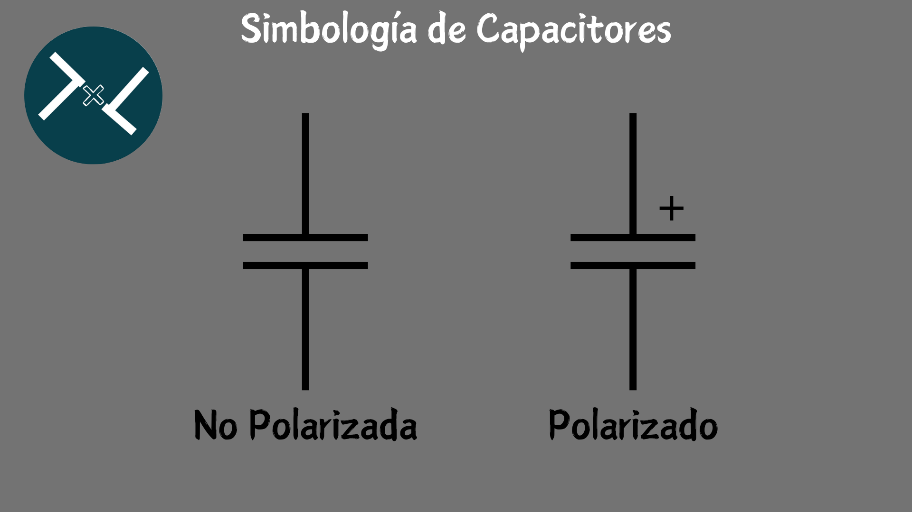

La Historia de microfaradio (µF)
La historia de microfaradio (µF) está relacionada con la historia de faradio (F), que es la unidad de
medida de la capacitancia eléctrica.
El faradio se nombró en honor a Michael Faraday, un físico y
químico inglés que realizó importantes
contribuciones al estudio de la electricidad y el magnetismo. El término "faradio" fue acuñado por
Latimer Clark y Charles Bright en 1861, pero originalmente se usó para una unidad de carga
eléctrica.
En 1873, el faradio se convirtió en una unidad de capacitancia. En 1881, el Congreso
Internacional de Electricistas de París adoptó oficialmente el nombre de farad para la unidad de
capacidad eléctrica.

¿Que es el Microfaradio (µF)?
Un microfaradio (µF) es una unidad de medida de la capacitancia eléctrica, que es la capacidad de un dispositivo para almacenar una carga eléctrica. El microfaradio es un submúltiplo del faradio (F), que es la unidad de capacitancia del Sistema Internacional de Unidades (SI). Un microfaradio equivale a una millonésima parte de un faradio, es decir, µF = 10^-6 F.
4 Tipos de Capacitores.
1.Capacitores de película:
Están formados por dos láminas metálicas enrolladas y separadas por una película plástica que actúa como dieléctrico. Tienen una buena estabilidad térmica y una baja pérdida de energía. Se usan para aplicaciones de alta frecuencia y filtrado.
Los capacitores de película son aquellos que usan una película de plástico como material dieléctrico y aluminio o zinc como electrodos. Estos capacitores tienen ventajas como baja pérdida, alta estabilidad y pequeño tamaño.
Los capacitores de película se pueden clasificar en dos tipos según la forma de los electrodos:
1.Capacitores de película/lámina. Son los que usan láminas metálicas separadas por una película de plástico. Estos capacitores tienen una alta capacidad y una buena resistencia a las sobretensiones, pero son más grandes y caros que los de película metalizada.
2.Capacitores de película metalizada. Son los que usan una película de plástico recubierta con una capa delgada de metal. Estos capacitores tienen una baja capacidad y una buena auto-curación, pero son más sensibles a las sobretensiones que los de película/lámina.
Los capacitores de película se pueden usar en diversas aplicaciones, como circuitos de sintonización, filtrado, acoplamiento, desacoplamiento, supresión de interferencias, corrección del factor de potencia, etc.
2.Capacitores electrolíticos:
Los capacitores electrolíticos son un tipo de capacitores que usan un líquido iónico como una de sus placas y un metal como la otra. Estos capacitores tienen una alta capacitancia en un tamaño reducido, pero son polarizados, es decir, tienen una terminal positiva y otra negativa que deben conectarse correctamente.
Los capacitores electrolíticos se pueden clasificar en dos tipos según el metal que usan:
1.Capacitores electrolíticos de aluminio. Son los que usan aluminio como metal y una capa de óxido de aluminio como dieléctrico. Estos capacitores tienen una buena relación capacidad-volumen y se usan en circuitos de baja y media frecuencia, como fuentes de alimentación, filtros o acoplamientos.
2.Capacitores electrolíticos de tantalio. Son los que usan tantalio como metal y una capa de óxido de tantalio como dieléctrico. Estos capacitores tienen una mayor capacidad-volumen que los de aluminio y una mejor estabilidad térmica y eléctrica. Se usan en circuitos de alta frecuencia, como osciladores, amplificadores o temporizadores.
3.Capacitores cerámicos:
Están formados por dos placas metálicas y un dieléctrico de cerámica. Tienen una baja capacidad de almacenamiento de energía, pero también una baja resistencia interna y una alta tolerancia. No están polarizados, lo que significa que se pueden conectar de cualquier forma. Se usan para aplicaciones de alta frecuencia y acoplamiento.Estos capacitores tienen una alta constante dieléctrica, lo que significa que pueden almacenar más carga eléctrica en un espacio reducido.
Los capacitores cerámicos se pueden clasificar en dos tipos según la composición de la cerámica:
1.Capacitores cerámicos de clase 1. Son los que usan una cerámica con un coeficiente de temperatura lineal y bajo, como el titanato de calcio o el zirconato de magnesio. Estos capacitores tienen una baja pérdida, una alta estabilidad y una buena precisión, pero una baja capacidad. Se usan en circuitos de alta frecuencia, como osciladores, filtros o resonadores.
2.Capacitores cerámicos de clase 2. Son los que usan una cerámica con un coeficiente de temperatura no lineal y alto, como el titanato de bario o el titanato de estroncio. Estos capacitores tienen una alta pérdida, una baja estabilidad y una baja precisión, pero una alta capacidad. Se usan en circuitos de baja frecuencia, como desacoplamientos, acoplamientos o supresión de ruido.
4.Capacitores variables:
Están formados por dos placas metálicas móviles que se pueden acercar o alejar para variar su capacidad. Tienen una baja capacidad de almacenamiento de energía, pero también una alta flexibilidad y precisión. Se usan para aplicaciones de sintonización y oscilación.
Los capacitores variables son aquellos que pueden modificar su capacitancia de forma intencional, ya sea de forma mecánica o electrónica. Estos capacitores se usan para ajustar la frecuencia de resonancia en circuitos sintonizadores, como los de radio o televisión.
1.Los capacitores variables mecánicos son los que cambian su capacitancia al variar la distancia o el área de solapamiento entre las placas conductoras. Están formados por un conjunto de láminas semicirculares de metal que pueden girar sobre un eje (rotor) y que se ubican entre otro conjunto de láminas fijas (estátor). El material dieléctrico puede ser aire o plástico. Al girar el eje, se modifica el área de solapamiento entre las láminas y, por tanto, la capacitancia.
Los capacitores variables electrónicos son los que cambian su capacitancia al variar el voltaje aplicado entre las placas conductoras. Están formados por un material semiconductor, como el silicio, que tiene una propiedad llamada efecto de campo. El efecto de campo consiste en que al aplicar un voltaje entre dos terminales del semiconductor, se crea una capa aislante que actúa como dieléctrico. Al variar el voltaje, se varía el grosor de la capa aislante y, por tanto, la capacitancia.
¿Para que se utilizan los Capacitores?
1.Suministrar energía: Los capacitores se usan para convertir corriente alterna en corriente continua en dispositivos electrónicos, como fuentes de alimentación, eliminando el ruido eléctrico de la corriente.
2.Filtrar señales: Los capacitores se usan para filtrar señales de audio y eliminar frecuencias no deseadas, como el ruido o los zumbidos. También se usan para filtrar señales digitales y reducir la interferencia entre circuitos.
3.Acoplar señales: Los capacitores se usan para bloquear la corriente continua de las entradas de los amplificadores, previniendo ruidos o daños en los parlantes. También se usan para acoplar señales de corriente alterna entre etapas de un circuito.
4.Almacenar energía: Los capacitores se usan para almacenar energía y liberarla rápidamente para producir un destello de luz, como en el flash de una cámara fotográfica. También se usan para almacenar energía en sistemas de energía renovable y mejorar la calidad de la energía.
5.Sintonizar y oscilar: Los capacitores se usan para sintonizar y oscilar circuitos, como en radios, televisores y relojes. También se usan para crear tonos musicales, como en órganos y sintetizadores.